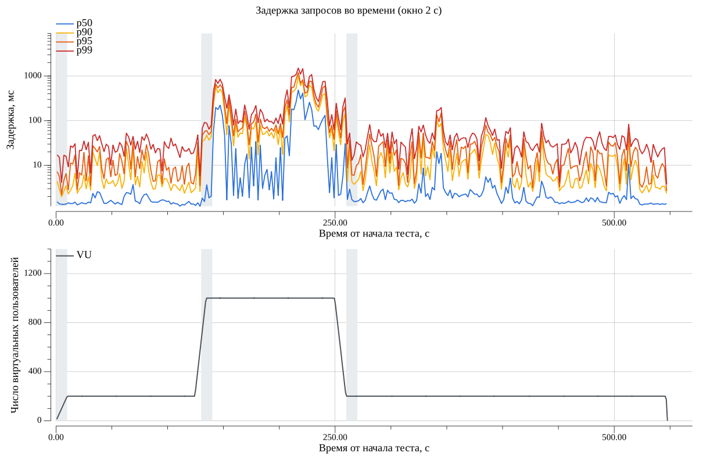
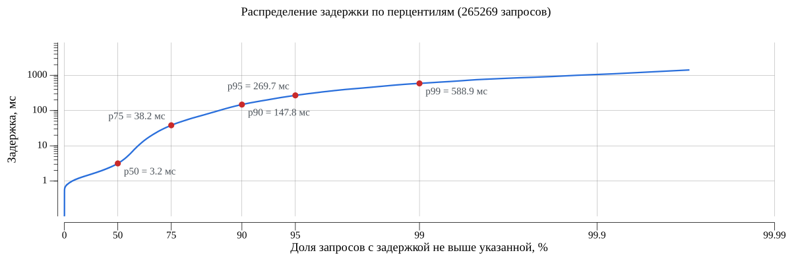
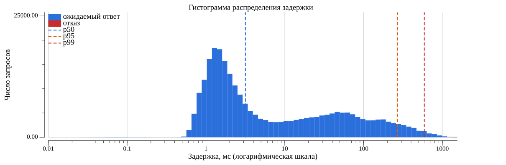
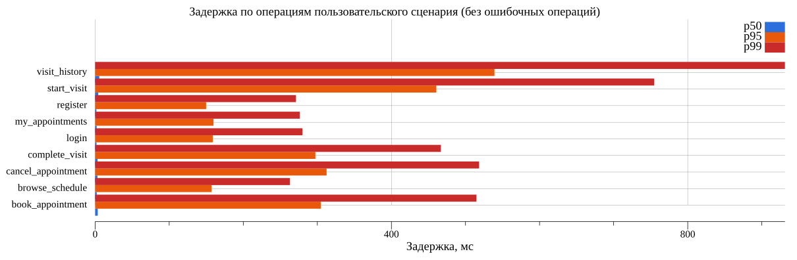
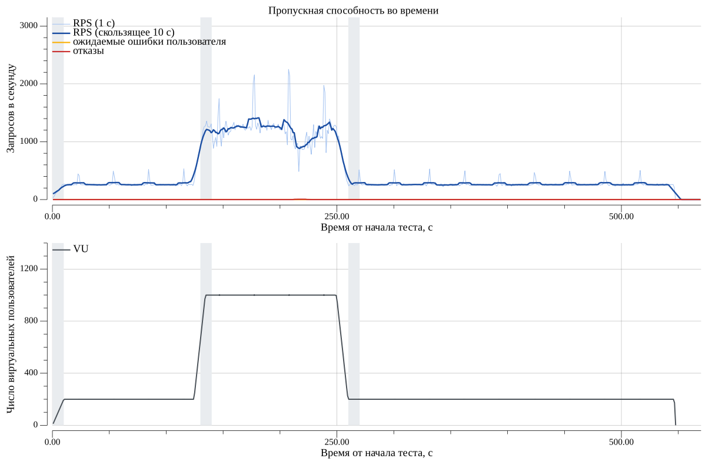
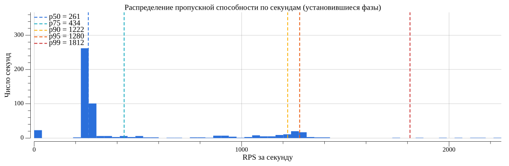
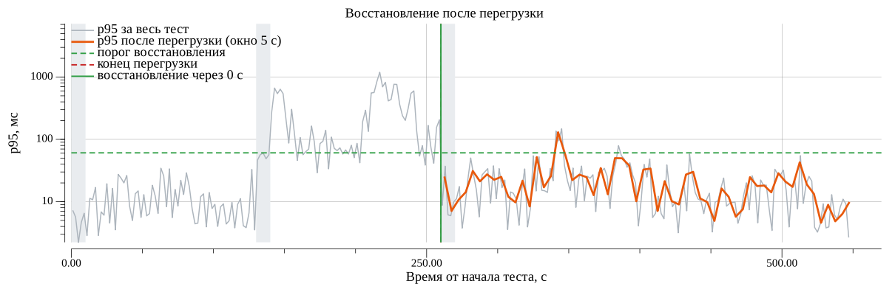
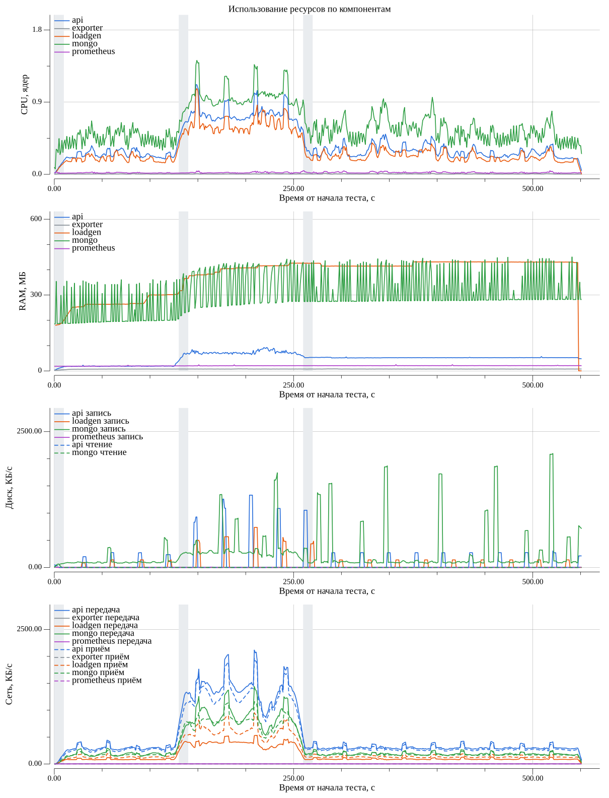

Перегрузка и восстановление
Запросов265269
RPS среднее / медиана465 / 261
p50 / p95 задержки3.17 / 270 мс
p99 задержки589 мс
Отказы0.02%
Ошибочные операции0.00%
Базовая нагрузка: p95 10.8 мс, 304 RPS. Перегрузка: p95 394 мс, отказы 0.0%, 1169 RPS. Восстановление после снятия перегрузки за 0.00 с.
Задержка
| Задержка, мс | count | min | mean | p50 | p75 | p90 | p95 | p99 | max |
|---|---|---|---|---|---|---|---|---|---|
| Все запросы | 265269 | -1433 | 49.2 | 3.17 | 38.2 | 148 | 270 | 589 | 1533 |
| Корректные операции | 265269 | -1433 | 49.2 | 3.17 | 38.2 | 148 | 270 | 589 | 1533 |
| Ошибочные операции | 0 | — | — | — | — | — | — | — | — |



Операции пользовательского сценария
| Операция | count | min | mean | p50 | p75 | p90 | p95 | p99 | max | Отказы | Ошибочные |
|---|---|---|---|---|---|---|---|---|---|---|---|
| book_appointment | 38499 | 0.04 | 52.7 | 3.53 | 46.0 | 180 | 305 | 515 | 1096 | 0.00% | 0.00% |
| browse_schedule | 38578 | 0.03 | 27.9 | 2.20 | 25.9 | 89.9 | 157 | 263 | 753 | 0.00% | 0.00% |
| cancel_appointment | 11444 | 0.04 | 52.3 | 3.15 | 43.4 | 181 | 312 | 518 | 982 | 0.00% | 0.00% |
| complete_visit | 26741 | 0.04 | 50.6 | 3.32 | 45.6 | 171 | 297 | 467 | 992 | 0.00% | 0.00% |
| login | 38587 | 0.04 | 28.3 | 1.89 | 25.8 | 92.1 | 159 | 280 | 600 | 0.00% | 0.00% |
| my_appointments | 38370 | -1433 | 28.2 | 2.09 | 25.9 | 90.8 | 160 | 276 | 605 | 0.00% | 0.00% |
| register | 8171 | 0.08 | 25.5 | 1.72 | 19.6 | 77.0 | 150 | 271 | 547 | 0.00% | 0.00% |
| start_visit | 26824 | 0.04 | 76.7 | 4.22 | 60.9 | 273 | 461 | 755 | 1393 | 0.00% | 0.00% |
| visit_history | 38055 | 0.03 | 93.3 | 5.61 | 75.5 | 314 | 539 | 931 | 1533 | 0.16% | 0.00% |

Пропускная способность
| Показатель | count | min | mean | p50 | p75 | p90 | p95 | p99 | max |
|---|---|---|---|---|---|---|---|---|---|
| RPS за секунду | 570 | 0.00 | 465 | 261 | 447 | 1241 | 1280 | 1779 | 2251 |


Фазы нагрузки
| Участок | VU | RPS ср. | RPS p50 | RPS p5 | p50 мс | p95 мс | p99 мс | Отказы | CPU api | CPU mongo | RAM api, МБ | SLO |
|---|---|---|---|---|---|---|---|---|---|---|---|---|
| разгон | 200 | 151 | 150 | 42.0 | 1.37 | 4.79 | 16.1 | 0.00% | 0.10 | 0.30 | 10.9 | да |
| базовая нагрузка | 200 | 287 | 258 | 242 | 1.53 | 12.9 | 32.9 | 0.00% | 0.25 | 0.46 | 19.3 | да |
| рост | 1000 | 1220 | 1259 | 1005 | 1.97 | 54.4 | 79.7 | 0.00% | 0.60 | 0.76 | 61.7 | да |
| перегрузка | 1000 | 1169 | 1206 | 764 | 28.1 | 394 | 725 | 0.04% | 0.76 | 0.99 | 73.1 | да |
| спад | 200 | 282 | 260 | 239 | 1.75 | 16.9 | 38.7 | 0.00% | 0.30 | 0.56 | 53.1 | да |
| восстановление | 200 | 247 | 257 | 0.00 | 1.87 | 25.0 | 54.3 | 0.00% | 0.28 | 0.54 | 52.2 | да |
Перегрузка и восстановление
| Участок | VU | RPS ср. | RPS p50 | RPS p5 | p50 мс | p95 мс | p99 мс | Отказы | CPU api | CPU mongo | RAM api, МБ | SLO |
|---|---|---|---|---|---|---|---|---|---|---|---|---|
| эталон | 200 | 304 | 261 | 242 | 1.46 | 10.8 | 31.8 | 0.00% | 0.25 | 0.45 | 19.9 | да |
| перегрузка | 1000 | 1169 | 1206 | 764 | 28.1 | 394 | 725 | 0.04% | 0.76 | 0.99 | 73.1 | да |
| после | 200 | 205 | 254 | 0.00 | 1.62 | 17.7 | 39.5 | 0.00% | 0.24 | 0.48 | 52.3 | да |

Использование ресурсов
| Компонент | Метрика | min | max | mean | median | p95 |
|---|---|---|---|---|---|---|
| api | CPU, ядер | 0.02 | 1.12 | 0.38 | 0.29 | 0.78 |
| api | Троттлинг CPU, с/с | 0.00 | 0.10 | 0.01 | 0.00 | 0.04 |
| api | Чтение с диска, КБ/с | 0.00 | 40.1 | 0.20 | 0.00 | 0.00 |
| api | Запись на диск, КБ/с | 0.00 | 1331 | 67.0 | 0.00 | 273 |
| api | RAM (working set), МБ | 3.96 | 92.7 | 49.0 | 52.3 | 76.8 |
| api | Сеть, приём КБ/с | 1.21 | 1970 | 499 | 278 | 1399 |
| api | Сеть, передача КБ/с | 1.78 | 2117 | 550 | 302 | 1501 |
| api | Процессы и потоки | 7.00 | 17.0 | 9.73 | 10.0 | 10.0 |
| exporter | CPU, ядер | 0.00 | 0.01 | 0.01 | 0.00 | 0.01 |
| exporter | Троттлинг CPU, с/с | 0.00 | 0.00 | 0.00 | 0.00 | 0.00 |
| exporter | Чтение с диска, КБ/с | 0.00 | 0.00 | 0.00 | 0.00 | 0.00 |
| exporter | Запись на диск, КБ/с | 0.00 | 0.00 | 0.00 | 0.00 | 0.00 |
| exporter | RAM (working set), МБ | 2.56 | 7.94 | 7.24 | 7.40 | 7.54 |
| exporter | Сеть, приём КБ/с | 0.37 | 0.68 | 0.50 | 0.48 | 0.67 |
| exporter | Сеть, передача КБ/с | 1.95 | 5.70 | 4.23 | 4.05 | 5.61 |
| exporter | Процессы и потоки | 5.00 | 5.00 | 5.00 | 5.00 | 5.00 |
| loadgen | CPU, ядер | 0.00 | 1.07 | 0.31 | 0.23 | 0.69 |
| loadgen | Троттлинг CPU, с/с | 0.00 | 0.00 | 0.00 | 0.00 | 0.00 |
| loadgen | Чтение с диска, КБ/с | 0.00 | 0.00 | 0.00 | 0.00 | 0.00 |
| loadgen | Запись на диск, КБ/с | 0.00 | 738 | 33.6 | 0.00 | 139 |
| loadgen | RAM (working set), МБ | 0.00 | 432 | 378 | 415 | 431 |
| loadgen | Сеть, приём КБ/с | 0.00 | 954 | 239 | 131 | 669 |
| loadgen | Сеть, передача КБ/с | 0.00 | 533 | 157 | 87.8 | 409 |
| loadgen | Процессы и потоки | 0.00 | 9.00 | 8.53 | 9.00 | 9.00 |
| mongo | CPU, ядер | 0.07 | 1.42 | 0.62 | 0.55 | 1.00 |
| mongo | Троттлинг CPU, с/с | 0.01 | 1.31 | 0.26 | 0.15 | 0.89 |
| mongo | Чтение с диска, КБ/с | 0.00 | 60.0 | 0.47 | 0.00 | 0.00 |
| mongo | Запись на диск, КБ/с | 34.2 | 2097 | 267 | 103 | 1342 |
| mongo | RAM (working set), МБ | 186 | 451 | 306 | 280 | 435 |
| mongo | Сеть, приём КБ/с | 0.90 | 1159 | 312 | 171 | 835 |
| mongo | Сеть, передача КБ/с | 0.21 | 1439 | 342 | 192 | 1020 |
| mongo | Процессы и потоки | 39.0 | 153 | 113 | 122 | 148 |
| prometheus | CPU, ядер | 0.01 | 0.05 | 0.02 | 0.02 | 0.03 |
| prometheus | Троттлинг CPU, с/с | 0.00 | 0.00 | 0.00 | 0.00 | 0.00 |
| prometheus | Чтение с диска, КБ/с | 0.00 | 0.00 | 0.00 | 0.00 | 0.00 |
| prometheus | Запись на диск, КБ/с | 0.00 | 6.00 | 0.63 | 0.00 | 5.00 |
| prometheus | RAM (working set), МБ | 18.2 | 24.6 | 20.3 | 20.6 | 21.0 |
| prometheus | Сеть, приём КБ/с | 2.41 | 5.70 | 4.23 | 4.05 | 5.61 |
| prometheus | Сеть, передача КБ/с | 0.44 | 0.71 | 0.51 | 0.48 | 0.67 |
| prometheus | Процессы и потоки | 8.00 | 15.0 | 8.07 | 8.00 | 8.00 |

Коды ответов
| Код | Запросов |
|---|---|
| 200 | 191714 |
| 201 | 73494 |
| 500 | 61 |
Окружение прогона
| Компонент | Логические CPU | Квота CPU | Резерв RAM, МБ | Лимит RAM, МБ | Образ | ID образа |
|---|---|---|---|---|---|---|
| api | 0,1 | 1 | 512 | 512 | vitaline-lab6-api:20261124-225604-stress-vuyq | 34bab9a88d5d |
| exporter | 6,7 | — | 64 | 64 | vitaline-lab4-exporter:1 | 5d8e679d55a3 |
| loadgen | 4,5 | — | 2048 | 2048 | grafana/k6:1.3.0 | 3ddc8b1a33a2 |
| mongo | 2,3 | 1 | 1024 | 1024 | mongo:7 | 41e8195b2791 |
| prometheus | 6,7 | — | 768 | 768 | prom/prometheus:v3.5.0 | 63805ebb8d2b |